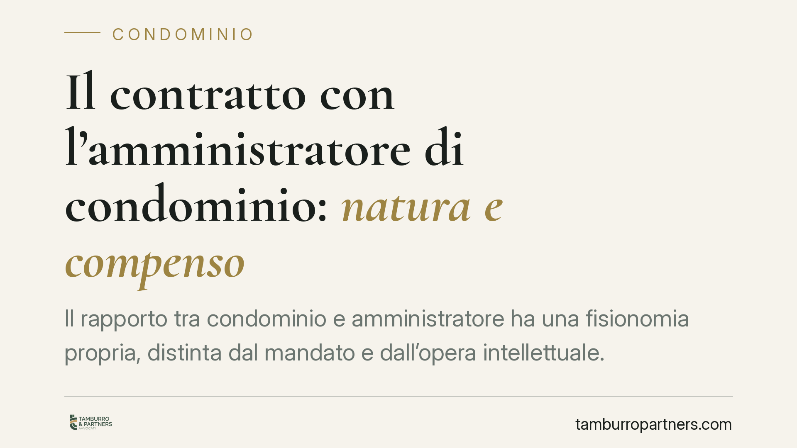

Il contratto con l'amministratore di condominio: natura e compenso
Il rapporto tra condominio e amministratore ha una fisionomia propria, distinta dal mandato e dall'opera intellettuale. Dalla riforma del 2012 la legge impone obblighi stringenti, primo fra tutti la specificazione analitica del compenso a pena di nullità. Chi amministra e chi delibera la nomina ha interesse a conoscere il regime applicabile e le conseguenze di una verbalizzazione imprecisa.

La natura del contratto
Il contratto con l'amministratore di condominio non si lascia ricondurre a un unico schema classico. Per anni si è discusso se applicare la disciplina del mandato (art. 1703 cod. civ.), con cui l'amministratore condivide l'agire per conto del condominio, o quella del contratto d'opera intellettuale (art. 2229 cod. civ.), cui richiama la componente professionale dell'incarico.
Dopo la riforma del 2012 (L. 220/2012) prevale la lettura che riconosce una figura tipica autonoma. Le funzioni, i poteri di rappresentanza e gli obblighi sono oggi disciplinati direttamente dagli artt. 1129, 1130 e 1131 cod. civ. Resta ferma l'applicazione delle regole sul mandato e sull'opera intellettuale in via integrativa, per quanto non espressamente previsto.
Il compenso: specificazione analitica a pena di nullità
Il punto più delicato riguarda il compenso. L'art. 1129, comma 14, cod. civ. stabilisce che l'amministratore, all'atto dell'accettazione della nomina e del suo rinnovo, deve specificare analiticamente l'importo dovuto per la sua attività, a pena di nullità della nomina.
La norma impone una distinzione tra la gestione ordinaria, retribuita con il compenso base, e le attività che esulano dall'ordinario (straordinari, pratiche fiscali, adempimenti una tantum), per le quali occorre un'indicazione separata. Un compenso genericamente "a corpo", privo di articolazione delle voci, non soddisfa il requisito di legge.
È importante chiarire il regime di invalidità, spesso confuso. La mancata specificazione analitica del compenso colpisce la nomina con nullità, rilevabile senza i limiti temporali propri dell'impugnazione delle delibere. Diverso è il piano della annullabilità della delibera assembleare viziata per altri motivi (vizi procedurali, di convocazione o di maggioranza), che segue l'art. 1137 cod. civ. e va fatta valere entro il termine di trenta giorni dalla deliberazione o dalla comunicazione ai dissenzienti e agli assenti. Tenere distinti i due regimi è essenziale: scambiare una nullità per una mera annullabilità può far perdere la tutela, o al contrario indurre a ritenere decaduta un'azione che decaduta non è.
Gli orientamenti della giurisprudenza
Sul contenuto dell'indicazione del compenso il dibattito non è chiuso. Secondo una lettura, la specificazione può ritenersi assolta con un'indicazione complessiva ma riferita alle singole voci di attività; secondo una lettura più rigorosa, serve il dettaglio economico di ciascuna voce. La questione va considerata aperta: in mancanza di un indirizzo consolidato, la soluzione prudente resta quella più analitica, che riduce il margine di contestazione.
Un secondo profilo riguarda la responsabilità dell'amministratore per negligenza nella gestione. L'inadempimento degli obblighi previsti dall'art. 1130 cod. civ. (tenuta dei registri, cura dei servizi comuni, riscossione dei contributi, rendiconto) può fondare la revoca e la responsabilità per i danni cagionati al condominio.
I requisiti soggettivi ex art. 71-bis
L'art. 71-bis disp. att. cod. civ. elenca i requisiti per svolgere l'incarico: godimento dei diritti civili, assenza di condanne per determinati reati, assenza di protesti, diploma di scuola secondaria di secondo grado e frequenza di un corso di formazione iniziale con aggiornamento periodico.
Il venir meno di uno di questi requisiti comporta la cessazione dall'incarico. In tal caso ciascun condomino può convocare l'assemblea per la nomina di un nuovo amministratore. Si tratta di una verifica da non trascurare in sede di conferimento e di rinnovo.
Cosa fare in concreto
- Pretendere un preventivo analitico. Il compenso va articolato per voci, distinguendo la gestione ordinaria dalle prestazioni ulteriori.
- Verbalizzare con precisione. La delibera di nomina deve riportare l'importo specificato dall'amministratore, non un rinvio generico al preventivo.
- Disciplinare per iscritto gli extra. Le attività straordinarie e i rimborsi vanno regolati in anticipo, con criteri di calcolo chiari.
- Verificare i requisiti ex art. 71-bis. Al conferimento e a ogni rinnovo è opportuno acquisire la documentazione sul possesso dei requisiti e sulla formazione.
- Rivedere le nomine con compenso sommario. È opportuno che le delibere con compenso indicato in modo generico siano riesaminate alla luce dell'art. 1129, comma 14, cod. civ.
Contributo informativo a cura di Tamburro & Partners Avvocati — Avv. Giuseppe Tamburro. Non costituisce parere legale.
Ogni condominio ha una storia a sé.
Se gestisci un'amministrazione e vuoi un confronto su una specifica questione condominiale, scrivi allo studio. Ti rispondiamo entro un giorno lavorativo.